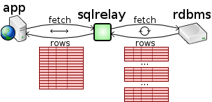
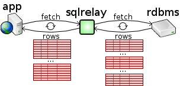
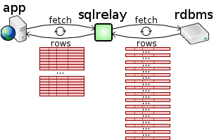

Multi-row fetches improve performance by reducing round-trips to the database.
To fetch a result set, most database API's provide a "fetch" function that fetches a single row. The app can then do something with that row and then fetch another row.
If instead, multiple rows were fetched at once and buffered, it would reduce the number of round-trips to the database and improve performance, at the cost of memory.
Some database API's do exactly this and provide a "fetchatonce" parameter that can be used to control how many rows are fetched at once.
When using a database that provides a "fetchatonce" parameter, SQL Relay exposes it in the configuration file and does multi-row fetches from the database.
The SQL Relay client goes even further. By default, it fetches the entire result set from the SQL Relay server in one round-trip.
For small result sets, like the ones that would likely be used to build a web page, this is very fast and usually doesn't consume an inordinate amount of memory. However for larger result sets, the necessary memory allocation can be inefficient and slow. To remedy this, the SQL Relay API's provide methods for setting how many rows will be fetched from the SQL Relay server and buffered at once.
See the FAQ items Why does SQL Relay buffer the entire result set? and How do keep SQL Relay from buffering the entire result set? for more information. The programming guides for each language delve into this subject as well.
Even if the database does not support multi-row fetches, the SQL Relay client can still do multi-row fetches from the SQL Relay server. If the SQL Relay server is run on the same machine as the database and the client is run on a separate machine, using SQL Relay can generally improves performance over native database access because of the reduced number of round-trips across the network while fetching the result set.
